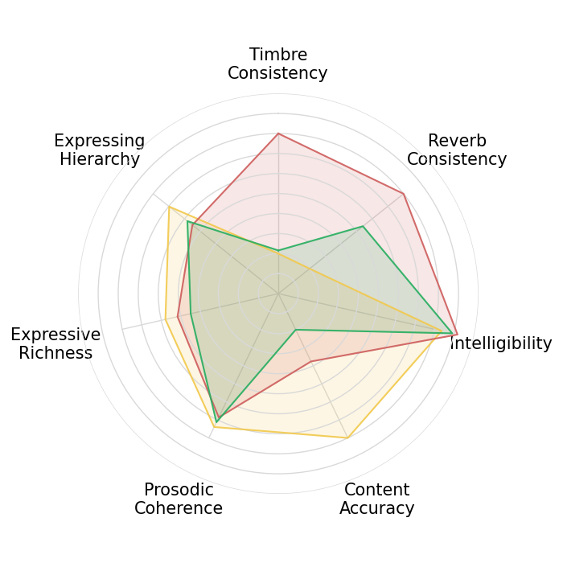
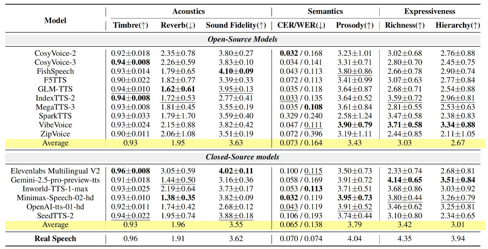

Demo
Reference Text

Statistics

Evaluation results of long-form TTS models across multi-dimensional metrics. Metrics cover Acoustics (Timbre/Reverb Consistency, Fidelity), Semantics (Content Accuracy, Prosodic Coherence), and Expressiveness (Richness, Hierarchy). CER and WER apply to Chinese and English, respectively. Closed-source models and open-source models are separately marked, with the best results in bold and the second best underlined.